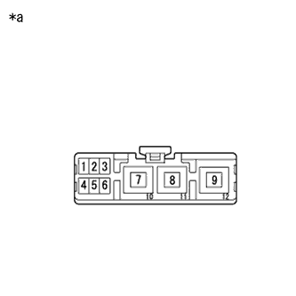
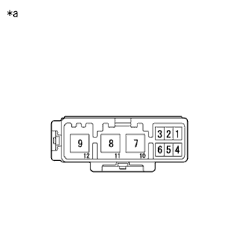
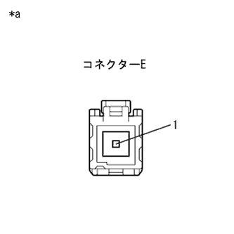

DTC B15C0 GPS Antenna Connection Malfunction (Short) |
DTC B15C1 GPS Antenna Connection Malfunction (Open) |
| DTC.No. | Diagnosis Description | Inspection Point |
|---|---|---|
| B15C0 | GPS antenna connection malfunction (short) |
|
| B15C1 | GPS antenna connection malfunction (open) |
)| Step 1 | Clear DTC |
Using SST (TaSCAN), read the DTCs following the screen. (see)
Select "Clear" on the screen display and clear the DTCs following the screen.
Turn IG OFF.
| NEXT | |
| Step 2 | Recheck DTC |
Using SST (TaSCAN), check the DTCs again and proceed to the destination below. (see)
| Result | Proceed to |
|---|---|
| Code output | A |
| No code output | B |
|
| ||||
| A | |
| Step 3 | Inspect Navigation Antenna Assembly |
Inspect Installation Condition
Check the navigation antenna assembly cord for installation problems such as sharp bends, pinching and incompletely engaged connectors.
 |
Resistance Inspection
Disconnect the navigation antenna assembly connector shown in the illustration.
Using SST (Toyota electrical tester), measure the resistance between terminals 7 - 10 of the connector.
| Tester Connection | Condition | Standard |
|---|---|---|
| 7 - 10 | Always | 50 to 500 Ω |
| *a | Connector disconnected (Navigation antenna assembly) |
|
| ||||
| OK | |
| Step 4 | Inspect Wire Harness or Connector |
Inspect Installation Condition
Check the wire harness between the navigation receiver assembly and navigation antenna assembly for installation problems such as sharp bends, pinching and incompletely engaged connectors.
Pre-inspection Preparation
 |
Disconnect the connector shown in the illustration that is connected to the navigation antenna assembly.
| *a | Front view of wire harness connector (to navigation antenna assembly) |
 |
Disconnect the connector shown in the illustration that is connected to the navigation receiver assembly.
| *a | Front view of wire harness connector (to navigation receiver assembly) |
Resistance Inspection
Using SST (Toyota electrical tester), measure the resistance of the vehicle wire harness between the navigation receiver assembly and navigation antenna assembly.
| Tester Connection | Condition | Standard |
|---|---|---|
| 7 - 1 | Always | Below 1 Ω |
Using SST (Toyota electrical tester), measure the resistance between the vehicle wire harness connector terminal and body ground.
| Tester Connection | Condition | Standard |
|---|---|---|
| 7 - Body ground | Always | 10 kΩ or higher |
|
| ||||
| OK | ||
| ||